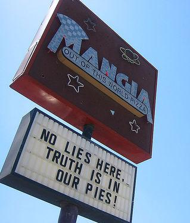

It’s all in your head: Negativland show review
|
photo / groovehouse  Taken at a Negativland performance at Rice University
Taken at a Negativland performance at Rice University
Taken at a Negativland performance at Rice University Negativland
April 19 | Alamo Drafthouse at the Ritz
Get this: Before last weekend, I’d never been to 6th Street on a Saturday night. My reason for finally going? I went to see the rarely-ever-performing group Negativland at the Alamo Ritz.
I splurged and paid for parking under I-35 and started my hike to the theater. It was just before 9pm – the downtown nightlife was starting to buzz, springing to life with scantily clad girls, punk rockers, and frat boys. As I neared the Ritz, I walked faster to hastily assimilate into the “free zone” of Negativland enthusiasts (and because I was seeing a rapidly swelling line of those enthusiasts).
The pronunciation of “Mangia” question answered
|
Mangia Pizza is some of the best pizza in Austin, but every time I speak the name, someone tries to correct my pronunciation. Fed up with having to defend how I pronounce my pizza, I emailed Sherry Russell, Department Coordinator/Accounts Receivables Manager and Corporate Office Administrator of Mangia Pizza.

photo / mrflip  Mon-juh
Mon-juh
Mon-juh Hi Sherry,I just wanted to suggest that you tell us somewhere on your website exactly how to pronounce “Mangia.” Is it “mahn-gee-uh?” “Mahn-juh?” “Mann-gee-uh?” I have had several fights with friends over this and I would love to know the correct pronunciation.
Cheers,
Christine Acker
Sherry wrote me back the next day:
Hi there Christine!
The way to properly say it is “mon-juh.” It means “eat” in Italian.
Hope you succeed in your battle.
B-Boy City 15 kicks off today
|
B-Boy City 15
B-Boy City 15 kicks off today – it’s a hip-hop festival that’s going on until the 27th, and they’re celebrating their 10-year anniversary with this one. B-boys and B-girls from all over the place will be in town for dance, hip hop, music – and at some point someone will likely get served.
Here’s a brief schedule of what’s going down this weekend at B-Boy City 15:
Thursday, April 24
Move the Crowd: Meet and greet from 5pm–7pm and live performances from 7pm–2am.
5pm–2am | $12
The Parish
214 E 6th St • Austin, TX
Art: Check out works inspired by hip-hop culture – photography, paintings, and graffiti.
6pm–9pm | FREE
Gallery Lombardi
602 W 7th St • Austin, TX
Cheap eats: Taqueria Chapala
|

photo / Kent Wang Jalisco style barbacoa and tasty tacos
Jalisco style barbacoa and tasty tacos Taqueria Chapala is cheap. In fact, the $7 plate is one of the priciest dishes on the menu. $5 can easily buy you enough to fill you up. A burrito costs $3.19 and a torta is only $2.99 – you can’t make this stuff yourself for less.
But price isn’t the only reason to go here. The food is delicious and hearty. My favorite item is the Jalisco style taco. Everybody at your table will be jealous. This place is great for hangover remedies and wallet woes. You’ll see all types of people here: people having Sunday lunch after church, kids trying to make the pain stop, regulars, and drifters. It’s a great little place for anyone. They’re located on the south side of Cesar Chavez a couple of blocks east of Chicon.


Recent comments